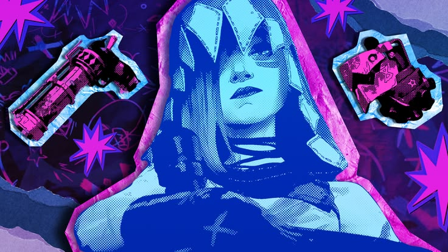
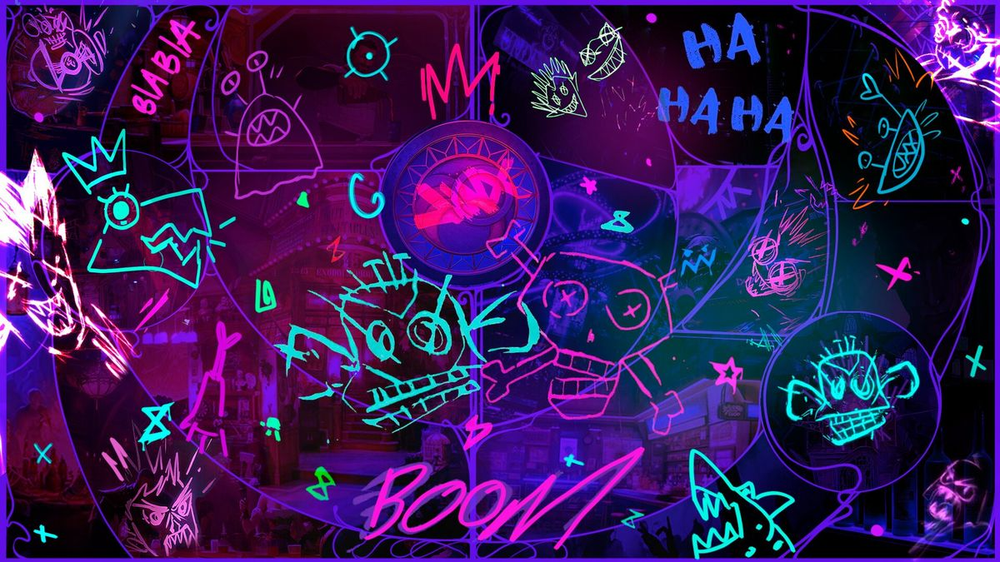
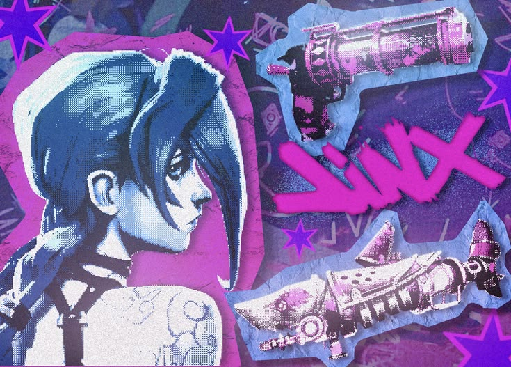

Pow-Pow
Senapan mesin berputar yang rapat tembakannya. Berisik, boros peluru, dan sangat disukai Jinx.
Gadis paling kacau dari lorong-lorong Zaun.
Jinx adalah tokoh dari serial animasi Arcane, yang berlatar di dunia League of Legends. Dulu namanya Powder, anak kecil yang tumbuh di Zaun bersama kakaknya, Vi.
Setelah semua yang menimpanya di kota bawah tanah itu, Powder berubah menjadi Jinx: berambut biru panjang, penuh ledakan, dan tidak pernah berhenti mencoret dinding dengan gambar-gambarnya.
Ceritanya berpusat pada dua kota kembar, Piltover yang megah dan Zaun yang keras, serta dua saudari yang terpisah oleh keduanya.

Senapan mesin berputar yang rapat tembakannya. Berisik, boros peluru, dan sangat disukai Jinx.
Peluncur roket berbentuk hiu. Sekali tembak, satu lorong ikut berantakan.
Pistol kecil yang cepat dan lincah, cocok untuk Jinx yang tidak bisa diam.

